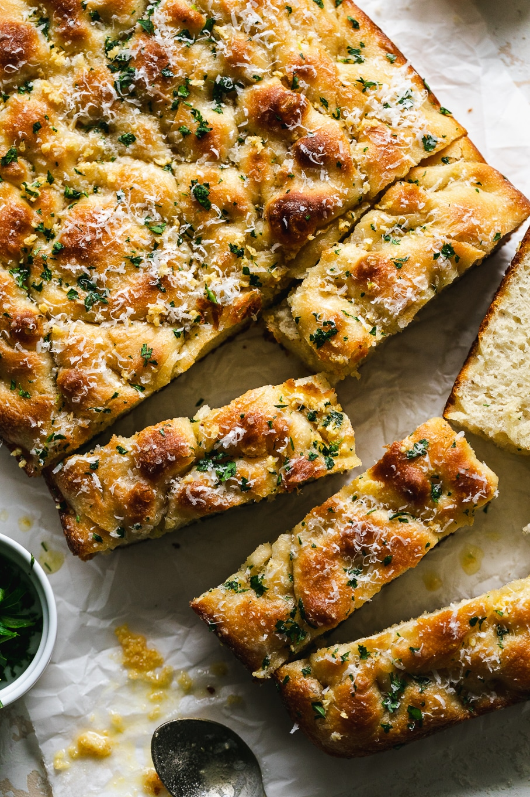

Home
Garlic Bread Focaccia

Garlic Bread Focaccia is fluffy inside, golden and crisp on the edges, and brushed with rich garlic butter. It’s ready to enjoy on its own, with soup, or with the Four Cheese Lasagna. and Tossed Caprese Salad .
Ingredients
For the focaccia
- 2 cups warm water
- 2 1/4 teaspoons active dry yeast
- 1 teaspoon granulated sugar
- 5 cups all purpose flour
- 1 1/2 tablespoons kosher salt
- flaky sea salt
- chopped flat leaf Italian parsley, for topping
- freshly grated Parmigiano Reggiano
For the garlic butter
- 4 tablespoons salted butter
- 4 cloves garlic, finely chopped or pressed
Steps
- In a medium bowl, whisk warm water, yeast, and sugar. Let sit for 10 minutes until foamy.
- In another bowl, whisk flour and salt. Add yeast mixture and knead until dough is smooth and pulls from the bowl.
- Transfer dough to an oiled bowl, cover, and refrigerate for 24 hours.
- Oil a 9x13 pan with ¼ cup olive oil. Stretch dough into pan, cover, and rest for 15 minutes.
- Stretch dough to pan edges, cover, and rest for 3 hours at room temperature.
- Preheat oven to 450°F. Dimple dough with fingertips, drizzle with olive oil, sprinkle with flaky salt.
- Bake 20–25 min, until golden brown.
- While baking, sauté garlic in butter until just golden. Remove from heat.
- Brush hot focaccia with garlic butter, sprinkle parsley and Parmigiano. Cool on a rack or serve warm.